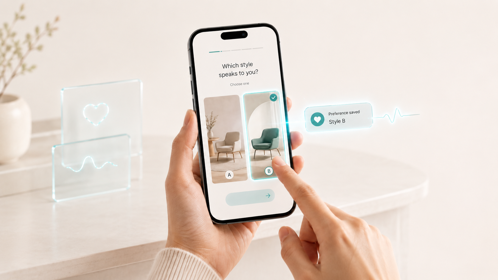
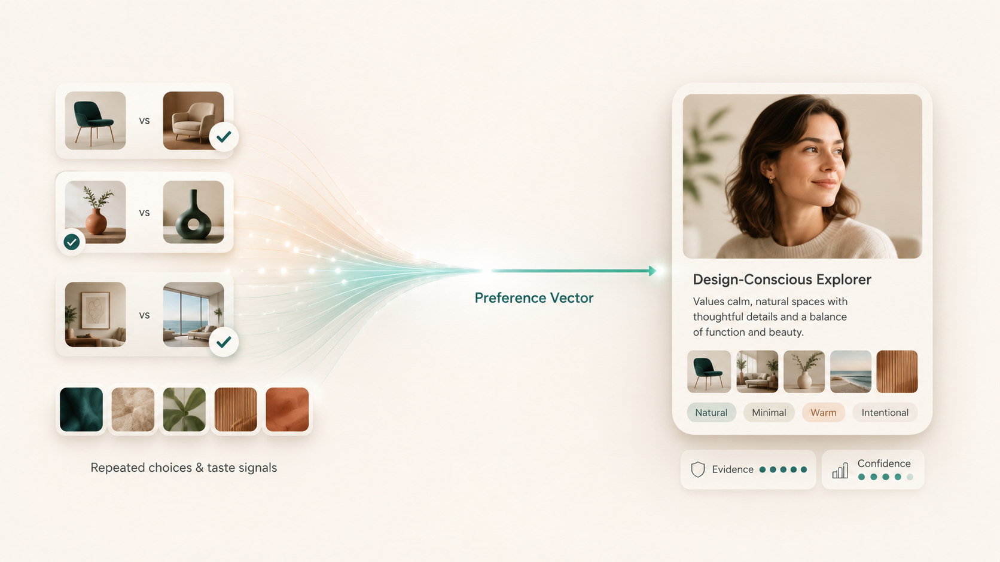
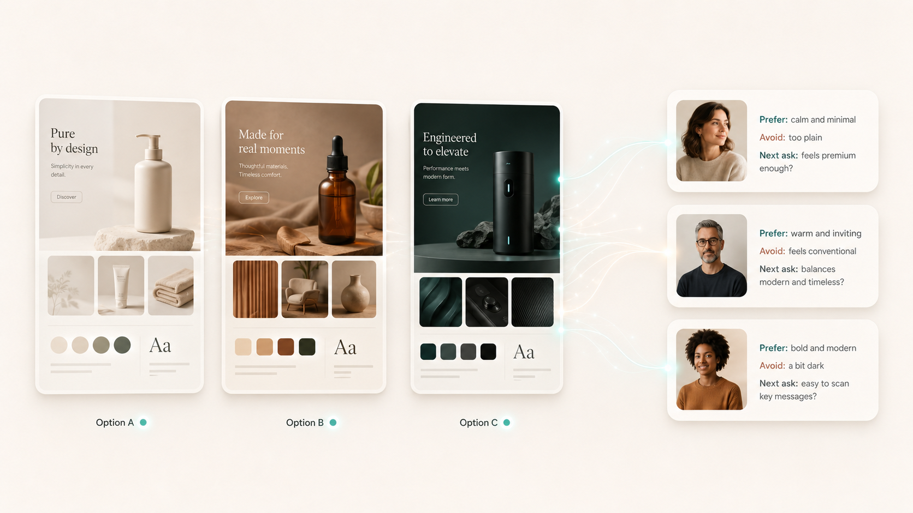
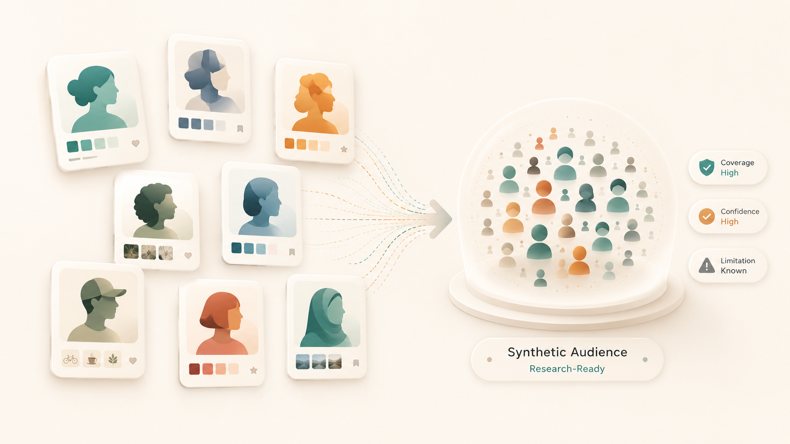

출시 준비중
Sudal
Interactive Preference Data Collection Layer
이미지 기반 A/B 선택과 밸런스 게임을 통해 취향과 시각적 선호 데이터를 수집합니다.

AI Persona Synthesis Research
AI Persona Synthesis Research는 응답자 모집과 raw data 수집에 드는 시간과 비용을 줄이고, 취향을 학습한 AI Persona와 Synthetic Audience를 통해 더 빠르고 효율적인 조사 흐름을 만드는 Root Kernel의 핵심 제품입니다.
Technologies
Sudal은 데이터를 수집하고, Space Compiler는 AI와 심리계량학을 결합해 이 데이터를 신뢰성 높은 persona artifact와 Synthetic Audience로 변환합니다.
Interactive Preference Data Collection Layer
이미지 기반 A/B 선택과 밸런스 게임을 통해 취향과 시각적 선호 데이터를 수집합니다.

Preference & Persona Synthesis Engine
AI와 심리계량학을 결합해 선택 데이터와 이미지 기반 선호를 신뢰성 높은 persona artifact로 변환하는 R&D 엔진입니다.

First product of AI Persona Synthesis Research
상품, 브랜드, 광고, 패키지, UI 디자인 반응 분석에 먼저 적용합니다.

AI Persona Pool as a Service
Vision Feedback을 넘어 설문조사와 여론조사에 활용할 수 있는 AI Persona Pool을 만들고, 장기적으로 조사 기관에 persona pool을 제공하는 서비스형 인프라로 확장합니다.

Speed & Cost
전통적인 설문조사와 여론조사는 실제 사람을 모집하고 응답을 수집한 뒤 분석해야 하기 때문에 며칠의 리드타임과 인건비, 패널 비용이 필요합니다. AIPSR은 취향을 학습한 AI Persona로 같은 질문을 빠르게 반복하고, 접촉하기 어려운 세그먼트까지 낮은 단위 비용으로 확장합니다.
| 비교 항목 | 기존 설문조사·여론조사 | AIPSR 조사 흐름 |
|---|---|---|
| 속도 | 응답자 모집, 오프라인 접촉, 온라인 패널 운영, raw data 정리에 보통 2~3일 이상이 걸릴 수 있습니다. | 구성된 AI Persona Pool에 같은 질문을 바로 실행해 여러 설문안, 메시지, 디자인 시안을 빠르게 반복 비교합니다. |
| 비용 | 조사원 인건비, 패널 모집비, 응답 보상, 분석 시간이 누적될수록 비용이 커집니다. | 한 번 만든 persona pool을 반복 활용해 추가 조사와 세그먼트 확장의 단위 비용을 낮추는 방향입니다. |
| 접근성 | 특정 조건을 만족하는 사람군이나 접촉하기 어려운 세그먼트는 표본 구성이 느리고 비쌉니다. | 접촉 가능한 사람 응답은 유지하고, 부족하거나 접근하기 어려운 세그먼트는 AI Persona 응답으로 확장하거나 일부 대체합니다. |
| 반복성 | 설문 문항이나 디자인 시안을 바꿀 때마다 다시 모집, 응답 수집, 분석 과정을 거쳐야 합니다. | 질문, 메시지, 디자인 시안을 바꿔가며 synthetic audience 반응을 반복 실행하고 비교할 수 있습니다. |
Difference
Root Kernel은 공공 통계와 소수 패널 인터뷰를 넘어, 실제 선택 행동에서 쌓이는 취향 데이터를 활용합니다. Sudal의 이미지 밸런스 게임과 반복 A/B 선택을 통해 시각적 선호까지 반영한 AI Persona를 만듭니다.
| 방식 | 한계 | Root Kernel의 관점 |
|---|---|---|
| 공공 통계 기반 persona | 나이, 성별, 지역 같은 집단 평균은 알 수 있지만 실제 취향과 디자인 선호는 약합니다. | 공공 통계는 집단 기준과 가중치를 잡는 데 사용하고, 취향 판단은 실제 선택 데이터와 함께 다룹니다. |
| 패널 인터뷰 기반 persona | 깊이는 있지만 비용이 높고 반복 축적이 어렵습니다. 소수 응답자의 말에 크게 의존할 수 있습니다. | Sudal의 밸런스 게임과 A/B 선택으로 더 자주, 더 자연스럽게 반복 선택 데이터를 쌓는 방향을 지향합니다. |
| Root Kernel의 AI Persona | 단순한 demographic profile이 아니라 실제 선택 패턴과 시각적 취향이 함께 필요합니다. | 텍스트 취향뿐 아니라 색상, 분위기, 디자인, UI, 패키지 이미지에 대한 visual preference signal까지 persona에 연결합니다. |
Foundations
AI Persona Synthesis Research는 상상으로 고객을 만드는 일이 아닙니다. 이미 커지고 있는 리서치 시장, 사람 데이터 기반 AI 연구, 그리고 선택 데이터를 다루는 측정 방법 위에 세워집니다.
Market Signals & AI Adoption
고객 조사와 시장 리서치 시장은 이미 1,500억 달러가 넘는 큰 시장입니다. 동시에 기업들은 더 빠르고 저렴한 조사 방법을 찾고 있고, Qualtrics 자료에 따르면 많은 연구자들이 synthetic data를 실무에 활용하기 시작했습니다.
Grounded Agent Simulation
Stanford HAI 관련 연구는 실제 사람 1,052명의 인터뷰와 설문 데이터를 바탕으로 만든 AI 에이전트가 일부 설문 응답에서 실제 사람의 반복 응답과 비슷한 패턴을 보일 수 있음을 보여줍니다. 핵심은 AI가 사람을 상상하는 것이 아니라, 충분한 사람 데이터에 grounded될 때 더 쓸모 있어진다는 점입니다.
MIRT, TIRT & Adaptive Testing
사람이 A와 B 중 하나를 고르는 행동은 단순 클릭이 아니라 취향과 성향의 작은 단서입니다. Space Compiler는 반복 선택 데이터에서 취향을 추정하고, 그 근거와 해석의 주의 범위를 함께 계산합니다..
Visual Preference & Personality
사람의 취향은 말과 글뿐 아니라 선택한 이미지에서도 드러납니다. 색, 분위기, 패키지, UI 이미지에 대한 반복 선택은 고객의 취향과 선호를 이해하는 중요한 단서가 됩니다.
Cohort Priors & Safe Positioning
Root Kernel은 모든 사람 조사를 AI로 대체하려 하지 않습니다. 공공 통계는 집단 기준과 가중치를 잡는 데 활용하고, 실제 접촉 가능한 사람 응답은 검증 기준으로 함께 다룹니다. AIPSR은 응답이 부족하거나 접촉하기 어려운 세그먼트를 AI Persona 기반 synthetic response로 확장해, 더 유연한 조사 인프라를 만듭니다.
Pipeline
Sudal이 반복 선택 데이터를 수집하면, Space Compiler가 이를 AI Persona와 Synthetic Audience로 변환하는 엔진을 만듭니다.
Sudal → Repeated Choice Data → Space Compiler → AI Persona Pool → Vision Feedback / Survey & Polling